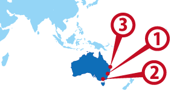

Sydney
Sydney Melbourne
Melbourne Brisbane
Brisbane
ワーホリ協定国一覧へ戻る

オーストラリア人気都市 BEST3
オーストラリア基本情報
| 首都 | Canberra |
|---|---|
| 言語 | English |
| 面積 | 7,686,850 km²(世界6位) |
| 人口 | 21,293,000人(世界51位) |
| 通貨 | Australia Dollar (AUD) |
＊2014 年10 月時点の数値です
| 日本時間 | PERTH | SYDNEY |
|---|---|---|
 1月1日 09:00am |
1月1日 08:00am |
1月1日 10:00am |
＊サマータイムの期間は時差が変動します
| 首都 | Canberra |
|---|---|
| 面積 | 7,686,850 km²(世界6位) |
| 人口 | 21,293,000人(世界51位) |
| 言語 | English |
|---|---|
| 通貨 | Australia Dollar (AUD) |
|
＊2014 年10 月時点の数値です |
|
日本との時差
| 日本時間 | PERTH | SYDNEY |
|---|---|---|
|
1月1日 09:00am |
1月1日 08:00am |
1月1日 10:00am |
＊サマータイムの期間は時差が変動します
オーストラリアってどんな国？
■ 生活
《交通機関》
オーストラリアにバス、電車、フェリー、モノレールなど、多くの公共交通機関があります。都市や場所によって便利なものが異なりますが、どの都市でもよく使われているのがバスです。日本のように社内アナウンスをしてくれないので、最初は間違わないようにアプリなどを使うか、運転手にあらかじめ降車駅を伝えるようにしましょう。シドニーではバス、電車、フェリー、ライトレールで共通して使えるICカード「オパールカード」を使うことができます。
■ 医療
《病院》
日本では怪我や病気の症状で病院・医院を選んで受信しますが、オーストラリアでは体調の異変を感じたらまずGP(General Practitioner)と呼ばれる一般開業医を訪れます。予約なしで受診してくれるところもあれば、予約が必要なところもあります。診察もしくは治療後、必要であれば処方箋を書いてもらい、それを薬局(Pharmacy)に持って行き、薬を購入します。GPでは対応できない症状や特別な処置が必要な場合は、専門医(Specialist)への招待状(Referral Letter)をGPに書いてもらい、予約を取って専門医を訪ねましょう。各専門医の検査機関での結果は、すべてGPと共有することができるので、「かかりつけ医」のような感覚で自分が頼れるGPを決めておくと良いでしょう。
《保険》
オーストラリアでは、市民権・永住権を持つ人向けの公的医療制度メディケア(Medicare)と、市民権・永住権を持たない人の医療費や、メディケアがカバーしない範囲の治療や入院・手術費を補うための保険である民間医療保険があり、留学生用健康保険OSHC(Overseas Student Health Cover)もここに含まれます。一時滞在の場合は海外傷害保険などに加入していただくのが一般的ですが、補償内容は会社やプランによって異なるので、自分に合ったものを選ぶようにしてください。
■ お金
《通貨》
オーストラリアの通貨は、オーストラリアドル (AUD: Australian Dollar)です。基本的にオーストラリア国内でのみ利用可能です。
コイン：5セント、10セント、 20セント、50セント、1ドル、2ドル
紙幣：5ドル、10ドル、20ドル、50ドル、100ドル
《銀行》
ANZ（Australia and New Zealand Banking Group）
WESTPAC（Westpac Banking Corporation）
NAB（National Australia Bank）
CBA（Commonwealth bank of Australia）
《クレジットカード》
オーストラリアはクレジットカード普及率が高いため、レストランやスーパーなど、多くの店舗でクレジットカードを利用することが可能です。また、身分証明書や支払い能力の証明としても認識されているので、必ず持って行きましょう。
使用できるクレジットカードの国際ブランド：VISA、マスターカード、アメリカン・エキスプレス・カード、JCB、ダイナースクラブ
■ 電話
予期せぬトラブルが発生した、クレジットカードを紛失したなどの緊急事態のための連絡先一覧です。
いざという時に慌てないで済むよう、いつもしっかり備えておきましょう。
《市外局番》
シドニー … 02
メルボルン … 03
ケアンズ・ブリスベン … 07
パース … 08
《電話》
24時間対応緊急連絡先
警察・消防・救急 … 000
電話通訳サービス … 13-1450
《公衆電話の使い方》
左お写真は、町で一番よく見かけるタイプのテルストラ社の公衆電話です。通話料金は50セントから。コインでもかけることができますが、国際電話や相手が携帯電話の場合は、専用テレフォン・カードを用意する方が良いでしょう。テレフォン・カードはコンビニなどで購入可能です。
《国際電話》
★） オーストラリアから日本かけるとき (日本の国番号は『81』)
0011 – 国番号(81) – 市外局番（最初の0をとる）- 電話番号
★） 日本からオーストラリアかけるとき (オーストラリアの国番号は６１)
001 – 国番号(61) – 市外局番（最初の0をとる）- 電話番号
■ インターネット
《回線速度》
オーストラリアではADSLなどのブロードバンド回線が主流となっています。最近では光ファイバー回線も利用できるようになりましたが、まだまだ利用できる地域が限られているのが現状です。オーストラリアのADSL回線速度は、2MBps～8MBpsくらい。日本のADSL回線速度は50Mbps～100Mbpsくらいなので、日本の回線と比べるとかなり遅いと感じてしまうと思います。
《無料WIFIスポット》
オーストラリアでは、屋外に多くの無料WIFIスポットが設置されています。図書館、ファーストフード店、カフェ、ショッピングセンターだけでなく、個人店でも無料のWIFIが用意されていることがあります。利用に関するルールは店舗ごとに異なっていて、スタッフにパスワードを教えてもらったり、レシートに記載されているパスワードが必要だったりする場合があり、時間や使用データ量などに制限があることもあります。

■ ライフスタイル
《食事》
国内生産品、輸入品ともに、オーストラリアでは豊富な種類の食材が売られている。スーパーマーケットや市場には、エンダイブやフェンネル、セロリアック、アーティチョークといった日本人にはなじみの薄い野菜から、シイタケやえのきだけ、白菜のような日本やアジアの食材もそろいます。
様々な文化背景や宗教の人が共に暮らすオーストラリアでは、街の中に多種多様なレストランが並ぶ風景もまた日常です。遠くまで足を延ばさなくても、イタリア、中国、タイ、マレーシア、韓国、日本など、本格的な各国料理を気軽に食べることができる。個人の自由を尊重するお国柄であることからも、食の選択肢は非常に多く選択されている印象です。
《カフェ》
カフェ文化が盛んと言われるオーストラリア。どの街に行っても、いたるところにカフェがあり、おいしいコーヒーやドリンク、スイーツを楽しむことができます。オーストラリアのカフェ経営の特徴は、何と言っても家族や個人で経営する独立型カフェが圧倒的に多く、全店舗の約9割を占めていることでしょう。オーストラリアのコーヒーは、イタリアンスタイルの「Espresso（エスプレッソ）」をベースに、ミルクなどを組み合わせて提供されます。（図参照）

世代や住んでいる場所によってもコーヒーの味の好みが分かれるようで、カフェラテは一般的に女性、フラットホワイトは年配者、エスプレッソはシドニー中心部の男性、カプチーノはシドニー郊外の人に好まれているようです。「オーストラリアの朝はコーヒーから始まる」とも言われるだけあり、多くのカフェが朝6時ごろからオープンしています。
《大使館》
在オーストラリア日本国大使館：
112 Empire Circuit, Yarralumla ACT 2600, Australia
在メルボルン日本国領事館からのお知らせ
ワーキングホリデーの方々から以下のようなトラブル報告が寄せられています。
（1）アパート契約をめぐる振り込め詐欺行為
豪州（メルボルン等）へ渡航する前、到着後の住居をインターネットで検索し、
実際の物件を見ることなく申し込みを行って前家賃やボンド（敷金、保証金にあたるもの）を払い、
いざ入居しようとすると鍵が受け取れない、物件には既に別の人が住んでいる等の事態にいたる方が多くいらっしゃいます。
立地条件が良いにもかかわらず相場より家賃が安い、オーナーが海外に在住している、鍵は郵便で送付する、早く振り込まなければ他の人に貸すと送金を急かす、
日系情報サイトやGumtreeなどで広告掲載しその後オーナーとのやり取りは主にメールのみ等の特徴があります。
不動産会社を介すことなく、物件の下見よりも先に現金を振り込むように言われたら、詐欺の可能性を疑って下さい。
被害報告は、以下の捜査機関へ届出てください。
・オーストラリアン サイバー セキュリティセンター
・ビクトリア州警察 ポリスアシスタンスライン（131 444）または、リポートオンライン
その上でビクトリア州ではConsumer Affairs Victoriaにご相談ください。
（2）シェアハウスボンド金返金トラブル
正式な契約書等を作成せずに入居し、インターネットの掲示板等で見た内容または条件とは違う、あるいは、退去時にボンドが返還されない等のトラブルが多く発生しています。
住居の選定時には十分確認を行った上で、正式な契約書を取り交わし、入居後は支払った家賃の領収書を保管して下さい。
オーナーが直接管理をするという物件は後日トラブルが発生しがちです。大手の不動産会社を使用されることをお勧めします。ボンド金はオーナーの口座ではなく、専門機関の口座に供託されるものですので、支払い後はしっかりと領収書をもらってください。
またシェアハウスの形態は、それぞれ異なります。形態によっては当地法令（Residential Tenancies Act 1997）で認められてない、またはシェアハウス事体（部分貸し）が無効である、こともあります。）
なお、この様なトラブルに遭った場合は、ビクトリア州では以下の機関が対応しますので、まず電話やホームページで確認し、相談、手続きをして下さい。
・ディスピュート セトルメントセンター（仲裁につき、当事者双方の合意が必要）
・テナンツ ビクトリア
・
・ビクトリア民事調停所（Victoria Civil Administrative Tribunal）
（3） 労働搾取
パートタイム労働に対する最低賃金より少ない賃金で働いているワーキングホリデーメーカーの方が多く見られます。当地の法律で定められている最低賃金が支払われるかを確かめた上で、合法な契約書を取り交わしてから就業を始めるようにしてください。労働者の権利についてはFair Work Ombudsmanのホームページで確認してください（日本語HP）。
・Fair Work Ombudsman
新たな仕事に就く方は、以下を行うようお願いします。
・自分の雇用形態を確認する。
・自分の最低賃金を確認する。
・自分の勤務時間や給与などの記録をつける。
Fair Work Ombudsmanでは、
・最低賃金、ペナルティー手当、その他の手当を知りたい方へ、給与カルキュレイター(Pay Calculator)を提供しています。
・職種ごとに異なる最低賃金が定められています。参考までに21歳以上の従業員の場合、最低時給は$19.49、有給休暇のない人の場合$24.36です（2019年9月現在）。最低賃金とは賃金総額（税引き前の金額）を指します。雇用者は従業員の給与から税金を控除しなければなりません。（詳細）
・勤務時間の管理に「レコード・マイ・アワーズ」アプリ(Record my hours app)を提供しています。
・給与明細書に記載されているべき事項を知りたい方、テンプレートを使用したい方は、「給与明細書」ページ(pay slip page)を参照してください 。
（4） 職場での問題が発生した場合、 Fair Work Ombudsmanは、問題を解決するため、以下の手順をとるよう助言しています。
・ステップ1: 問題を特定する
・ステップ2: 法律を確認する
・ステップ3: 職場の問題を解決する
・ステップ4: 私たち（フェアワークオンブズマン）に助けを求める
もし、労働搾取の被害にあってしまった場合には、Fair Work Ombudsmanに違反を告発し、未払い分を請求することが可能です。実際に8,000ドル請求できた事例もあります。
・職場の問題
手続き方法は、1．マイアカウントページから問い合わせる、2．電話で報告することが可能です。
電話通訳が必要な方は、翻訳・通訳サービスTIS (Translating and Interpreting Service) National Contact Centre 131 450に連絡して、日本語で電話相談（無料）する日時を決めてください。 オペレーターに日本語と伝えて、Fair Work Ombudsmanの番号131 394に電話するよう依頼してください。
（5）危険を伴う労務環境
農場（ファーム）等で働く際、重機や可燃物を取り扱う業務に従事する場合があります。いずれも危険が伴い怪我をされた等の報告も散見されますので労働内容及び労働環境を事前に問い合わせ、確認してください。農場の中には、合法な事業として登録を行っていないものもあり、労働災害保険（当地ではWork Safe）の対象とならないケースもあります。（1）と同様、必ず合法な契約書を取り交わしてから就業を始めるようにしてください。
詳しい案内は、査証（VISA）やTax File Numberの申請時に表示される、WorkSafeからの危機喚起内容を確認するか、WorkSafeのホームページで確認してください。
・WorkSafe
在メルボルン日本国総領事館ウェブサイトより
▼▼▼まずは無料セミナーへ！ワーキングホリデー＆留学の無料セミナーはこちら！▼▼▼